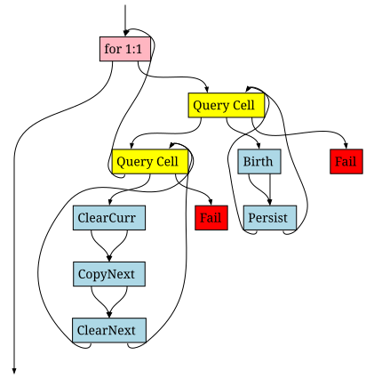
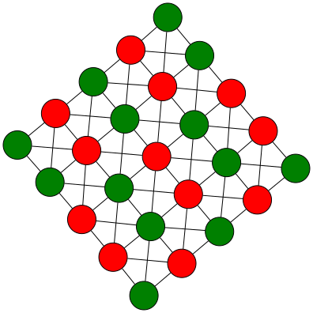

Conway's Game of Life
This is a demonstration of the game of life as an agent-based model.
We start with importing some libraries.
using AlgebraicRewriting, Catlab, Test
import Catlab.Graphics: to_graphviz
using Catlab.Graphics.Graphviz: Attributes, Statement, Node, Edge, Digraph
using PrettyTablesThe game of life has two rules: one which turns living things dead, and one that brings dead things to life. We model the terrain as a symmetric graph: cells are vertices. Neighboring cells have edges between them.
Implementation wise, if we are going to update cells one at a time, we must keep track of two bits of information (the cell's living status for the current timestep and whether it will be alive in the next timestep). Thus we need helper rule to overwrite the "current" life status with the "next" life status at the end of each timestep.
Ontology
Defining an ontology is stating what data is required to specify a state of the simulation at some point in time. In AlgebraicJulia, this is done via declaring a Presentation, i.e. a database schema. Objects (Ob, or tables) are types of entities. Homs (Hom, or foreign keys) are functional relationships between the aforementioned entities. AttrTypes are placeholders for Julia types, which are assigned to Ob via attributes (Attr).
The schema below extends the schema for directed symmetric graphs, which consists in two tables (E and V, for edges and vertices) and two homs (src and tgt, E→V). Furthermore a hom inv: E→E enforces that each edge is paired with its opposite-pointing edge.
The schema below says there are two more types of entities, Curr and Next. Think of these as little tokens that can be assigned to vertices to mark them as currently-alive or to-be-alive-in-the-next-timestep, respectively. Thus, we can also thinking of them as picking out subsets of V via the maps curr and next.
@present SchLife <: SchSymmetricGraph begin
(Curr, Next)::Ob
curr::Hom(Curr, V)
next::Hom(Next, V)
end
@acset_type Life(SchLife, part_type=BitSetParts) <: AbstractSymmetricGraph
const 𝒢 = ACSetCategory(MADCSetCat(Life()))
to_graphviz(SchLife; prog="dot")
-->
<!-- Title: G Pages: 1 -->
<svg width="246pt" height="133pt"
viewBox="0.00 0.00 246.00 133.00" xmlns="http://www.w3.org/2000/svg" xmlns:xlink="http://www.w3.org/1999/xlink">
<g id="graph0" class="graph" transform="scale(1 1) rotate(0) translate(4 129.25)">
<title>G</title>
<polygon fill="white" stroke="none" points="-4,4 -4,-129.25 242,-129.25 242,4 -4,4"/>
<!-- n1 -->
<g id="node1" class="node">
<title>n1</title>
<ellipse fill="none" stroke="black" cx="114" cy="-18" rx="27" ry="18"/>
<text xml:space="preserve" text-anchor="middle" x="114" y="-13.32" font-family="Times,serif" font-size="14.00">V</text>
</g>
<!-- n2 -->
<g id="node2" class="node">
<title>n2</title>
<ellipse fill="none" stroke="black" cx="27" cy="-107.25" rx="27" ry="18"/>
<text xml:space="preserve" text-anchor="middle" x="27" y="-102.58" font-family="Times,serif" font-size="14.00">E</text>
</g>
<!-- n2&%2345;>n1 -->
<g id="edge1" class="edge">
<title>n2&%2345;>n1</title>
<path fill="none" stroke="black" d="M29.6,-89.06C32.04,-77.97 36.65,-63.84 45.25,-54 54.31,-43.62 67.19,-35.93 79.36,-30.45"/>
<polygon fill="black" stroke="black" points="80.43,-33.79 88.35,-26.76 77.77,-27.32 80.43,-33.79"/>
<text xml:space="preserve" text-anchor="middle" x="56.12" y="-57.95" font-family="Times,serif" font-size="14.00">src</text>
</g>
<!-- n2&%2345;>n1 -->
<g id="edge2" class="edge">
<title>n2&%2345;>n1</title>
<path fill="none" stroke="black" d="M43.36,-92.71C50.76,-86.39 59.51,-78.64 67,-71.25 76.12,-62.25 85.67,-51.85 93.75,-42.7"/>
<polygon fill="black" stroke="black" points="96.35,-45.05 100.29,-35.21 91.08,-40.44 96.35,-45.05"/>
<text xml:space="preserve" text-anchor="middle" x="93.57" y="-57.95" font-family="Times,serif" font-size="14.00">tgt</text>
</g>
<!-- n2&%2345;>n2 -->
<g id="edge3" class="edge">
<title>n2&%2345;>n2</title>
<path fill="none" stroke="black" d="M51.53,-115.49C62.51,-116.27 72,-113.53 72,-107.25 72,-103.33 68.29,-100.78 62.83,-99.62"/>
<polygon fill="black" stroke="black" points="63.22,-96.14 53.04,-99.09 62.84,-103.13 63.22,-96.14"/>
<text xml:space="preserve" text-anchor="middle" x="82.88" y="-102.58" font-family="Times,serif" font-size="14.00">inv</text>
</g>
<!-- n3 -->
<g id="node3" class="node">
<title>n3</title>
<ellipse fill="none" stroke="black" cx="139" cy="-107.25" rx="27" ry="18"/>
<text xml:space="preserve" text-anchor="middle" x="139" y="-102.58" font-family="Times,serif" font-size="14.00">Curr</text>
</g>
<!-- n3&%2345;>n1 -->
<g id="edge4" class="edge">
<title>n3&%2345;>n1</title>
<path fill="none" stroke="black" d="M134.18,-89.43C130.74,-77.43 126.04,-61.03 122.04,-47.07"/>
<polygon fill="black" stroke="black" points="125.43,-46.17 119.31,-37.52 118.7,-48.1 125.43,-46.17"/>
<text xml:space="preserve" text-anchor="middle" x="143.74" y="-57.95" font-family="Times,serif" font-size="14.00">curr</text>
</g>
<!-- n4 -->
<g id="node4" class="node">
<title>n4</title>
<ellipse fill="none" stroke="black" cx="211" cy="-107.25" rx="27" ry="18"/>
<text xml:space="preserve" text-anchor="middle" x="211" y="-102.58" font-family="Times,serif" font-size="14.00">Next</text>
</g>
<!-- n4&%2345;>n1 -->
<g id="edge5" class="edge">
<title>n4&%2345;>n1</title>
<path fill="none" stroke="black" d="M198.72,-91.29C189.44,-80.4 176.1,-65.59 163,-54 156.54,-48.29 149.15,-42.62 142.11,-37.57"/>
<polygon fill="black" stroke="black" points="144.28,-34.81 134.08,-31.97 140.28,-40.56 144.28,-34.81"/>
<text xml:space="preserve" text-anchor="middle" x="195.54" y="-57.95" font-family="Times,serif" font-size="14.00">next</text>
</g>
</g>
</svg>
)
We can further extend this schema with an additional attribute of (x,y) coordinates for every vertex. This is nice for visualization but is otherwise unnecessary when doing the actual agent-based modeling. So what we will do is build our model with the Life schema and then run our model with the LifeCoords schema.
@present SchLifeCoords <: SchLife begin
Coords::AttrType
coords::Attr(V, Coords)
end
@acset_type AbsLifeCoords(SchLifeCoords, part_type=BitSetParts) <: AbstractSymmetricGraph
const LifeCoords = AbsLifeCoords{Tuple{Int,Int}};
const 𝒢′ = ACSetCategory(MADVarACSetCat(LifeCoords()))Catlab.CategoricalAlgebra.Pointwise.CSets.ACSetCategory(Catlab.CategoricalAlgebra.Pointwise.PointwiseCats.MADVarACSetCats.MADVarACSetCat(Main.AbsLifeCoords{Tuple{Int64, Int64}}), Dict{Symbol, Type}(:Cat => Catlab.CategoricalAlgebra.Cats.Categories.ConcreteCategory, :ACSHom => Catlab.CategoricalAlgebra.Pointwise.ACSetTransformations.ACSetTransformation, :Hom => Catlab.BasicSets.FinFunctions.FinFunction, :Op => Catlab.BasicSets.CopairedFinDomFunctions.CopairedFinDomFunction, :Sym => Symbol, :AttrType => Catlab.BasicSets.FinSets.FinSet, :Ob => Catlab.BasicSets.FinSets.FinSet, :Attr => Catlab.BasicSets.CopairedFinDomFunctions.CopairedFinDomFunction, :ACS => ACSets.ACSetInterface.ACSet, :Hetero => Catlab.CategoricalAlgebra.Pointwise.CSets.Heteromorphisms.ConcreteHeteroMorphism…))Data migration functors
We ought to be able to take a state of the world (with no coordinate information) and obtain a state of the world with coordinates (the canonical way to do this is to assign "variables" for the values of the coordinates).
F = Migrate(𝒢′, SchLifeCoords, LifeCoords; delta=false); # adds coordinatesF⁻¹ = DeltaMigration(FinFunctor(idₒ, idₘ, SchLife, SchLifeCoords)); # removes coordinates
Helper functions
Functions to help us create a grid.
function make_grid(curr::AbstractMatrix, next=nothing)
n, m = size(curr)
n == m || error("Must be square")
X, coords = LifeCoords(), Dict()
for i in 1:n
for j in 1:n
coords[i=>j] = add_vertex!(X; coords=(i, j))
if Bool(curr[i, j])
add_part!(X, :Curr, curr=coords[i=>j])
end
if !isnothing(next) && Bool(next[i, j])
add_part!(X, :Curr, curr=coords[i=>j])
end
end
end
for i in 1:n
for j in 1:n
if i < n
add_edge!(X, coords[i=>j], coords[i+1=>j])
end
if j < n
add_edge!(X, coords[i=>j], coords[i=>j+1])
end
if i < n && j < n
add_edge!(X, coords[i=>j], coords[i+1=>j+1])
end
if i < n && j > 1
add_edge!(X, coords[i=>j], coords[i+1=>j-1])
end
end
end
X
end
make_grid(n::Int, random=false) = make_grid((random ? rand : zeros)(Bool, (n, n)));Functions to help us visualize a grid. Although we have no such constraint, we'll expect any LifeCoords instance to be a regular grid (for the purposes of visualization). When that's the case, we can visualize the game state using plaintext.
function view_life(f::ACSetTransformation, pth=tempname())
v = Base.collect(f[:V])
view_life(codom(f), pth; star=isempty(v) ? nothing : only(v))
end
function view_life(X::LifeCoords, pth=tempname(); star=nothing)
n = Int(sqrt(nparts(X, :V)))
coords = Dict([(i, j) => findfirst(==((i, j)), X[:coords])
for (i, j) in Iterators.product(1:n, 1:n)])
mat = pretty_table(String, reduce(hcat, map(1:n) do i
map(1:n) do j
c, x = [!isempty(incident(X, coords[(i, j)], x)) for x in [:curr, :next]]
res = c ? (x ? "O" : "o") : (x ? "X" : "x")
return res * ((star == coords[(i, j)]) ? "." : "")
end
end); show_column_labels=false, backend=:markdown)
open(pth, "w") do io
write(io, mat)
end
return mat
end
init = make_grid(3, true)
view_life(init) |> println|--:|--:|--:|
| o | x | o |
| o | x | o |
| x | x | x |We can also visualize a grid with a distinguished agent. Here an agent living in a game state X is a map A → X where A is the shape of the agent. The only kind of agent we'll consider in this model is that of a lone vertex.
Note that A below is defined without coordinates, whereas init is an instance of LifeCoords. So in order to relate them via a mapping (which requires them to share a schema) we promote A to LifeCoords using the data migration, F.
A = Life(1)
view_life(homomorphism(F(A), init; any=true)) |> println|---:|--:|--:|
| o. | x | o |
| o | x | o |
| x | x | x |We must also work with miniature game states that are not grids in order for us to define the dynamics, as they are what the patterns and replacements of rewrite rules are made of. In order to visualize these, we will use another visualization function.
function view_life_graph(X::Union{Life,LifeCoords}, pth=tempname(); star=nothing)
pg = PropertyGraph{Any}(; prog="neato", graph=Dict(),
node=Dict(:shape => "circle", :style => "filled", :margin => "0"),
edge=Dict(:dir => "none", :minlen => "1"))
add_vertices!(pg, nparts(X, :V))
for v in vertices(X)
set_vprop!(pg, v, :fillcolor, isempty(incident(X, v, :curr)) ? "red" : "green")
isempty(incident(X, v, :next)) || set_vprop!(pg, v, :penwidth, "4.0")
set_vprop!(pg, v, :label, star == v ? "*" : "")
end
for e in filter(e -> X[e, :inv] > e, edges(X))
add_edge!(pg, X[e, :src], X[e, :tgt])
end
G = to_graphviz(pg)
open(pth, "w") do io
show(io, "image/svg+xml", G)
end
G
end;
view_life_graph(init)
-->
<!-- Title: G Pages: 1 -->
<svg width="218pt" height="218pt"
viewBox="0.00 0.00 218.00 218.00" xmlns="http://www.w3.org/2000/svg" xmlns:xlink="http://www.w3.org/1999/xlink">
<g id="graph0" class="graph" transform="scale(1 1) rotate(0) translate(4 213.51)">
<title>G</title>
<polygon fill="white" stroke="none" points="-4,4 -4,-213.51 213.57,-213.51 213.57,4 -4,4"/>
<!-- n1 -->
<g id="node1" class="node">
<title>n1</title>
<ellipse fill="green" stroke="black" cx="119.41" cy="-191.51" rx="18" ry="18"/>
</g>
<!-- n2 -->
<g id="node2" class="node">
<title>n2</title>
<ellipse fill="green" stroke="black" cx="154.28" cy="-139.8" rx="18" ry="18"/>
</g>
<!-- n1&%2345;>n2 -->
<g id="edge2" class="edge">
<title>n1&%2345;>n2</title>
<path fill="none" stroke="black" d="M129.68,-176.27C134.18,-169.6 139.45,-161.79 143.96,-155.11"/>
</g>
<!-- n4 -->
<g id="node4" class="node">
<title>n4</title>
<ellipse fill="red" stroke="black" cx="69.66" cy="-154.14" rx="18" ry="18"/>
</g>
<!-- n1&%2345;>n4 -->
<g id="edge1" class="edge">
<title>n1&%2345;>n4</title>
<path fill="none" stroke="black" d="M104.75,-180.5C98.33,-175.68 90.81,-170.03 84.38,-165.2"/>
</g>
<!-- n5 -->
<g id="node5" class="node">
<title>n5</title>
<ellipse fill="red" stroke="black" cx="104.94" cy="-104.75" rx="18" ry="18"/>
</g>
<!-- n1&%2345;>n5 -->
<g id="edge3" class="edge">
<title>n1&%2345;>n5</title>
<path fill="none" stroke="black" d="M116.41,-173.53C113.93,-158.64 110.41,-137.58 107.93,-122.7"/>
</g>
<!-- n3 -->
<g id="node3" class="node">
<title>n3</title>
<ellipse fill="red" stroke="black" cx="191.57" cy="-89.87" rx="18" ry="18"/>
</g>
<!-- n2&%2345;>n3 -->
<g id="edge5" class="edge">
<title>n2&%2345;>n3</title>
<path fill="none" stroke="black" d="M165.26,-125.09C170.08,-118.65 175.71,-111.1 180.53,-104.65"/>
</g>
<!-- n2&%2345;>n4 -->
<g id="edge7" class="edge">
<title>n2&%2345;>n4</title>
<path fill="none" stroke="black" d="M136.33,-142.84C122.07,-145.26 102.2,-148.63 87.87,-151.06"/>
</g>
<!-- n2&%2345;>n5 -->
<g id="edge4" class="edge">
<title>n2&%2345;>n5</title>
<path fill="none" stroke="black" d="M139.2,-129.09C133.08,-124.74 126.03,-119.73 119.92,-115.39"/>
</g>
<!-- n6 -->
<g id="node6" class="node">
<title>n6</title>
<ellipse fill="red" stroke="black" cx="139.88" cy="-55.13" rx="18" ry="18"/>
</g>
<!-- n2&%2345;>n6 -->
<g id="edge6" class="edge">
<title>n2&%2345;>n6</title>
<path fill="none" stroke="black" d="M151.22,-121.84C148.79,-107.57 145.41,-87.69 142.97,-73.35"/>
</g>
<!-- n3&%2345;>n5 -->
<g id="edge9" class="edge">
<title>n3&%2345;>n5</title>
<path fill="none" stroke="black" d="M173.62,-92.95C158.85,-95.49 138.01,-99.07 123.16,-101.62"/>
</g>
<!-- n3&%2345;>n6 -->
<g id="edge8" class="edge">
<title>n3&%2345;>n6</title>
<path fill="none" stroke="black" d="M176.34,-79.63C169.67,-75.15 161.86,-69.9 155.18,-65.41"/>
</g>
<!-- n4&%2345;>n5 -->
<g id="edge11" class="edge">
<title>n4&%2345;>n5</title>
<path fill="none" stroke="black" d="M80.24,-139.32C84.71,-133.07 89.9,-125.81 94.36,-119.56"/>
</g>
<!-- n7 -->
<g id="node7" class="node">
<title>n7</title>
<ellipse fill="green" stroke="black" cx="18" cy="-119.2" rx="18" ry="18"/>
</g>
<!-- n4&%2345;>n7 -->
<g id="edge10" class="edge">
<title>n4&%2345;>n7</title>
<path fill="none" stroke="black" d="M54.44,-143.85C47.77,-139.34 39.96,-134.06 33.29,-129.54"/>
</g>
<!-- n8 -->
<g id="node8" class="node">
<title>n8</title>
<ellipse fill="green" stroke="black" cx="55.55" cy="-69.79" rx="18" ry="18"/>
</g>
<!-- n4&%2345;>n8 -->
<g id="edge12" class="edge">
<title>n4&%2345;>n8</title>
<path fill="none" stroke="black" d="M66.67,-136.25C64.29,-122.03 60.98,-102.23 58.59,-87.94"/>
</g>
<!-- n5&%2345;>n6 -->
<g id="edge14" class="edge">
<title>n5&%2345;>n6</title>
<path fill="none" stroke="black" d="M115.42,-89.86C119.84,-83.58 124.98,-76.28 129.4,-70"/>
</g>
<!-- n5&%2345;>n7 -->
<g id="edge16" class="edge">
<title>n5&%2345;>n7</title>
<path fill="none" stroke="black" d="M86.92,-107.74C72,-110.22 50.9,-113.73 35.99,-116.21"/>
</g>
<!-- n5&%2345;>n8 -->
<g id="edge13" class="edge">
<title>n5&%2345;>n8</title>
<path fill="none" stroke="black" d="M89.85,-94.07C83.73,-89.73 76.66,-84.73 70.55,-80.4"/>
</g>
<!-- n9 -->
<g id="node9" class="node">
<title>n9</title>
<ellipse fill="red" stroke="black" cx="89.69" cy="-18" rx="18" ry="18"/>
</g>
<!-- n5&%2345;>n9 -->
<g id="edge15" class="edge">
<title>n5&%2345;>n9</title>
<path fill="none" stroke="black" d="M101.78,-86.77C99.16,-71.88 95.46,-50.83 92.84,-35.95"/>
</g>
<!-- n6&%2345;>n8 -->
<g id="edge18" class="edge">
<title>n6&%2345;>n8</title>
<path fill="none" stroke="black" d="M121.99,-58.24C107.78,-60.71 87.98,-64.15 73.7,-66.63"/>
</g>
<!-- n6&%2345;>n9 -->
<g id="edge17" class="edge">
<title>n6&%2345;>n9</title>
<path fill="none" stroke="black" d="M125.09,-44.19C118.61,-39.4 111.03,-33.79 104.54,-28.99"/>
</g>
<!-- n7&%2345;>n8 -->
<g id="edge19" class="edge">
<title>n7&%2345;>n8</title>
<path fill="none" stroke="black" d="M29.06,-104.64C33.91,-98.27 39.59,-90.8 44.44,-84.41"/>
</g>
<!-- n8&%2345;>n9 -->
<g id="edge20" class="edge">
<title>n8&%2345;>n9</title>
<path fill="none" stroke="black" d="M65.61,-54.53C70.01,-47.85 75.17,-40.02 79.58,-33.33"/>
</g>
</g>
</svg>
)
Now we make some helper functions to construct important ACSets and maps between them. We start with a single vertex which is marked as to-be-alive in the next time step.
Next() = @acset Life begin V = 1; Next = 1; next = 1 end;
view_life_graph(Next())
-->
<!-- Title: G Pages: 1 -->
<svg width="44pt" height="44pt"
viewBox="0.00 0.00 44.00 44.00" xmlns="http://www.w3.org/2000/svg" xmlns:xlink="http://www.w3.org/1999/xlink">
<g id="graph0" class="graph" transform="scale(1 1) rotate(0) translate(4 40)">
<title>G</title>
<polygon fill="white" stroke="none" points="-4,4 -4,-40 40,-40 40,4 -4,4"/>
<!-- n1 -->
<g id="node1" class="node">
<title>n1</title>
<ellipse fill="red" stroke="black" stroke-width="4" cx="18" cy="-18" rx="18" ry="18"/>
</g>
</g>
</svg>
)
We also want to refer to a vertex which is alive in the current time step
Curr() = @acset Life begin V = 1; Curr = 1; curr = 1 end;
view_life_graph(Curr())
-->
<!-- Title: G Pages: 1 -->
<svg width="44pt" height="44pt"
viewBox="0.00 0.00 44.00 44.00" xmlns="http://www.w3.org/2000/svg" xmlns:xlink="http://www.w3.org/1999/xlink">
<g id="graph0" class="graph" transform="scale(1 1) rotate(0) translate(4 40)">
<title>G</title>
<polygon fill="white" stroke="none" points="-4,4 -4,-40 40,-40 40,4 -4,4"/>
<!-- n1 -->
<g id="node1" class="node">
<title>n1</title>
<ellipse fill="green" stroke="black" cx="18" cy="-18" rx="18" ry="18"/>
</g>
</g>
</svg>
)
We also want these where we have a morphism incoming from a vertex.
to_next() = homomorphism(Life(1), Next());
to_curr() = homomorphism(Life(1), Curr());We make a helper for cells connected to n living neighbors
function living_neighbors(n::Int; alive=false)
X = Life(1)
alive && add_part!(X, :Curr, curr=1)
for _ in 1:n
v = add_part!(X, :V)
add_part!(X, :Curr, curr=v)
add_edge!(X, v, 1)
end
X
end
view_life_graph(living_neighbors(3))
-->
<!-- Title: G Pages: 1 -->
<svg width="168pt" height="176pt"
viewBox="0.00 0.00 168.00 176.00" xmlns="http://www.w3.org/2000/svg" xmlns:xlink="http://www.w3.org/1999/xlink">
<g id="graph0" class="graph" transform="scale(1 1) rotate(0) translate(4 171.7)">
<title>G</title>
<polygon fill="white" stroke="none" points="-4,4 -4,-171.7 163.76,-171.7 163.76,4 -4,4"/>
<!-- n1 -->
<g id="node1" class="node">
<title>n1</title>
<ellipse fill="red" stroke="black" cx="65.88" cy="-89.71" rx="18" ry="18"/>
</g>
<!-- n2 -->
<g id="node2" class="node">
<title>n2</title>
<ellipse fill="green" stroke="black" cx="141.76" cy="-101.49" rx="18" ry="18"/>
</g>
<!-- n2&%2345;>n1 -->
<g id="edge1" class="edge">
<title>n2&%2345;>n1</title>
<path fill="none" stroke="black" d="M123.78,-98.7C111.77,-96.83 96.03,-94.39 84,-92.52"/>
</g>
<!-- n3 -->
<g id="node3" class="node">
<title>n3</title>
<ellipse fill="green" stroke="black" cx="38.51" cy="-18" rx="18" ry="18"/>
</g>
<!-- n3&%2345;>n1 -->
<g id="edge2" class="edge">
<title>n3&%2345;>n1</title>
<path fill="none" stroke="black" d="M44.99,-34.99C49.36,-46.43 55.09,-61.43 59.44,-72.84"/>
</g>
<!-- n4 -->
<g id="node4" class="node">
<title>n4</title>
<ellipse fill="green" stroke="black" cx="18" cy="-149.7" rx="18" ry="18"/>
</g>
<!-- n4&%2345;>n1 -->
<g id="edge3" class="edge">
<title>n4&%2345;>n1</title>
<path fill="none" stroke="black" d="M29.35,-135.48C36.98,-125.92 47,-113.37 54.62,-103.83"/>
</g>
</g>
</svg>
)
We can control whether the central cell is itself alive or not
view_life_graph(living_neighbors(3; alive=true))
-->
<!-- Title: G Pages: 1 -->
<svg width="168pt" height="176pt"
viewBox="0.00 0.00 168.00 176.00" xmlns="http://www.w3.org/2000/svg" xmlns:xlink="http://www.w3.org/1999/xlink">
<g id="graph0" class="graph" transform="scale(1 1) rotate(0) translate(4 171.7)">
<title>G</title>
<polygon fill="white" stroke="none" points="-4,4 -4,-171.7 163.76,-171.7 163.76,4 -4,4"/>
<!-- n1 -->
<g id="node1" class="node">
<title>n1</title>
<ellipse fill="green" stroke="black" cx="65.88" cy="-89.71" rx="18" ry="18"/>
</g>
<!-- n2 -->
<g id="node2" class="node">
<title>n2</title>
<ellipse fill="green" stroke="black" cx="141.76" cy="-101.49" rx="18" ry="18"/>
</g>
<!-- n2&%2345;>n1 -->
<g id="edge1" class="edge">
<title>n2&%2345;>n1</title>
<path fill="none" stroke="black" d="M123.78,-98.7C111.77,-96.83 96.03,-94.39 84,-92.52"/>
</g>
<!-- n3 -->
<g id="node3" class="node">
<title>n3</title>
<ellipse fill="green" stroke="black" cx="38.51" cy="-18" rx="18" ry="18"/>
</g>
<!-- n3&%2345;>n1 -->
<g id="edge2" class="edge">
<title>n3&%2345;>n1</title>
<path fill="none" stroke="black" d="M44.99,-34.99C49.36,-46.43 55.09,-61.43 59.44,-72.84"/>
</g>
<!-- n4 -->
<g id="node4" class="node">
<title>n4</title>
<ellipse fill="green" stroke="black" cx="18" cy="-149.7" rx="18" ry="18"/>
</g>
<!-- n4&%2345;>n1 -->
<g id="edge3" class="edge">
<title>n4&%2345;>n1</title>
<path fill="none" stroke="black" d="M29.35,-135.48C36.98,-125.92 47,-113.37 54.62,-103.83"/>
</g>
</g>
</svg>
)
Rules
We have finished specifying what makes up a simulation state, and next is to define what sorts of transitions are possible. This is done by declaring rewrite rules.
A dead cell becomes alive iff exactly 3 living neighbors
BirthP1 = living_neighbors(3) # must have 3 neighbors
BirthN1 = living_neighbors(4) # forbid the cell to have 4 neighbors
BirthN2 = Curr() # forbid the cell to be alive (i.e. it's currently dead)
BP1, BN1, BN2 = homomorphism.(Ref(Life(1)), [BirthP1, BirthN1, BirthN2]; initial=(V=[1],))
bac = [PAC(BP1; monic=true), NAC.([BN1, BN2]; monic=true)...]
Birth = Rule(id[𝒢](Life(1)), to_next(); ac=bac, cat=𝒢);A living cell stays alive iff 2 or 3 living neighbors
PersistR = @acset Life begin
V = 1; Curr = 1; Next = 1; curr = 1; next = 1
end
PersistP1 = living_neighbors(2; alive=true)
PersistN1 = living_neighbors(4; alive=true)
DR, DP1, DN1 = homomorphism.(Ref(Curr()), [PersistR, PersistP1, PersistN1]; initial=(V=[1],))
pac = [PAC(DP1; monic=true), NAC(DN1; monic=true)]
Persist = Rule(id[𝒢](Curr()), DR; ac=pac, cat=𝒢);remove "Curr" status
ClearCurr = Rule(to_curr(), id[𝒢](Life(1)); cat=𝒢);remove "Next" status
ClearNext = Rule(to_next(), id[𝒢](Life(1)); cat=𝒢);Copy "Next" to "Curr"
CopyNext = Rule(to_next(), to_curr(); cat=𝒢);Assembling rules into a recipe
Now we can assemble our building blocks into a large wiring diagram characterizing the flow of the overall ABM simulation. In addition to the blue rewrite rule blocks, we have yellow Query blocks which execute subroutines once per agent (the second output wire) before exiting (the first output wire).
Give symbolic names to the rewrite rules from before
rules = [:Birth => Birth, :Persist => Persist, :ClearCurr => ClearCurr,
:ClearNext => ClearNext, :CopyNext => CopyNext];All rules have interface of a single distinguished cell, i.e. they are executed from the perspective an agent which is a particular distinguished vertex.
Normally we can consider branching possibilities depending on whether or not the rewrite is successful, but in this simulation we don't do this. tryrule simply merges the two output wires from a rewrite rule box into a single output wire.
rBirth, rPersist, rClearCurr, rClearNext, rCopyNext =
[tryrule(RuleApp(n, r, Life(1))) for (n, r) in rules]
view_sched(rBirth)
-->
<!-- Title: G Pages: 1 -->
<svg width="56pt" height="110pt"
viewBox="0.00 0.00 56.00 110.00" xmlns="http://www.w3.org/2000/svg" xmlns:xlink="http://www.w3.org/1999/xlink">
<g id="graph0" class="graph" transform="scale(1 1) rotate(0) translate(4 106.13)">
<title>G</title>
<polygon fill="white" stroke="none" points="-4,4 -4,-106.13 52,-106.13 52,4 -4,4"/>
<!-- n0in1 -->
<!-- n1 -->
<!-- Birth -->
<g id="n1" class="node">
<title>n1</title>
<polygon fill="lightblue" stroke="none" points="48,-64.69 0,-64.69 0,-37.44 48,-37.44 48,-64.69"/>
<polygon fill="none" stroke="black" points="0,-37.44 0,-64.69 48,-64.69 48,-37.44 0,-37.44"/>
<text xml:space="preserve" text-anchor="start" x="5.62" y="-46.19" font-family="Serif" font-size="14.00">Birth</text>
</g>
<!-- n0in1&%2345;>n1 -->
<g id="e1" class="edge">
<title>n0in1:s&%2345;>n1:n</title>
<path fill="none" stroke="black" d="M24,-100.69C24,-87.06 24,-82.14 24,-71.1"/>
<polygon fill="black" stroke="black" points="25.75,-71.2 24,-66.2 22.25,-71.2 25.75,-71.2"/>
</g>
<!-- n0out1 -->
<!-- n1&%2345;>n0out1 -->
<g id="e2" class="edge">
<title>n1:s&%2345;>n0out1:n</title>
<path fill="none" stroke="black" d="M12,-37.44C12,-22.95 20.86,-19.23 23.35,-7.77"/>
<polygon fill="black" stroke="black" points="25.08,-8.1 23.85,-2.95 21.6,-7.74 25.08,-8.1"/>
</g>
<!-- n1&%2345;>n0out1 -->
<g id="e3" class="edge">
<title>n1:s&%2345;>n0out1:n</title>
<path fill="none" stroke="black" d="M36,-37.44C36,-22.95 27.14,-19.23 24.65,-7.77"/>
<polygon fill="black" stroke="black" points="26.4,-7.74 24.15,-2.95 22.92,-8.1 26.4,-7.74"/>
</g>
</g>
</svg>
)
The first for loop is computing next for all cells
update_next = agent(rBirth ⋅ rPersist, Life(1); n=:Cell)
view_sched(update_next)
-->
<!-- Title: G Pages: 1 -->
<svg width="226pt" height="237pt"
viewBox="0.00 0.00 226.00 237.00" xmlns="http://www.w3.org/2000/svg" xmlns:xlink="http://www.w3.org/1999/xlink">
<g id="graph0" class="graph" transform="scale(1 1) rotate(0) translate(4 232.63)">
<title>G</title>
<polygon fill="white" stroke="none" points="-4,4 -4,-232.63 222.11,-232.63 222.11,4 -4,4"/>
<!-- n0in1 -->
<!-- n1 -->
<!-- Query Cell -->
<g id="n1" class="node">
<title>n1</title>
<polygon fill="yellow" stroke="none" points="144.86,-191.19 59.11,-191.19 59.11,-163.94 144.86,-163.94 144.86,-191.19"/>
<polygon fill="none" stroke="black" points="59.11,-163.94 59.11,-191.19 144.86,-191.19 144.86,-163.94 59.11,-163.94"/>
<text xml:space="preserve" text-anchor="start" x="64.11" y="-172.69" font-family="Serif" font-size="14.00">Query Cell</text>
</g>
<!-- n0in1&%2345;>n1 -->
<g id="e1" class="edge">
<title>n0in1:s&%2345;>n1:n</title>
<path fill="none" stroke="black" d="M80.99,-227.19C80.99,-213.56 80.67,-208.64 80.58,-197.6"/>
<polygon fill="black" stroke="black" points="82.33,-197.7 80.56,-192.7 78.83,-197.71 82.33,-197.7"/>
</g>
<!-- n0out1 -->
<!-- n1&%2345;>n0out1 -->
<g id="e8" class="edge">
<title>n1:s&%2345;>n0out1:n</title>
<path fill="none" stroke="black" d="M73.4,-163.94C73.4,-146.53 64.39,-144.13 57.99,-127.94 36.8,-74.37 13.77,-62.15 12.09,-7.9"/>
<polygon fill="black" stroke="black" points="13.84,-7.93 12.01,-2.95 10.34,-7.98 13.84,-7.93"/>
</g>
<!-- n2 -->
<!-- Fail -->
<g id="n2" class="node">
<title>n2</title>
<polygon fill="red" stroke="none" points="218.11,-127.94 181.86,-127.94 181.86,-100.69 218.11,-100.69 218.11,-127.94"/>
<polygon fill="none" stroke="black" points="181.86,-100.69 181.86,-127.94 218.11,-127.94 218.11,-100.69 181.86,-100.69"/>
<text xml:space="preserve" text-anchor="start" x="186.86" y="-109.44" font-family="Serif" font-size="14.00">Fail</text>
</g>
<!-- n1&%2345;>n2 -->
<g id="e5" class="edge">
<title>n1:s&%2345;>n2:n</title>
<path fill="none" stroke="black" d="M130.57,-163.94C130.57,-131.63 190.57,-158.32 199.01,-134.31"/>
<polygon fill="black" stroke="black" points="200.73,-134.64 199.76,-129.44 197.27,-134.11 200.73,-134.64"/>
</g>
<!-- n3 -->
<!-- Birth -->
<g id="n3" class="node">
<title>n3</title>
<polygon fill="lightblue" stroke="none" points="125.99,-127.94 77.99,-127.94 77.99,-100.69 125.99,-100.69 125.99,-127.94"/>
<polygon fill="none" stroke="black" points="77.99,-100.69 77.99,-127.94 125.99,-127.94 125.99,-100.69 77.99,-100.69"/>
<text xml:space="preserve" text-anchor="start" x="83.61" y="-109.44" font-family="Serif" font-size="14.00">Birth</text>
</g>
<!-- n1&%2345;>n3 -->
<g id="e2" class="edge">
<title>n1:s&%2345;>n3:n</title>
<path fill="none" stroke="black" d="M101.99,-163.94C101.99,-150.31 101.99,-145.39 101.99,-134.35"/>
<polygon fill="black" stroke="black" points="103.74,-134.45 101.99,-129.45 100.24,-134.45 103.74,-134.45"/>
</g>
<!-- n4 -->
<!-- Persist -->
<g id="n4" class="node">
<title>n4</title>
<polygon fill="lightblue" stroke="none" points="131.74,-64.69 72.24,-64.69 72.24,-37.44 131.74,-37.44 131.74,-64.69"/>
<polygon fill="none" stroke="black" points="72.24,-37.44 72.24,-64.69 131.74,-64.69 131.74,-37.44 72.24,-37.44"/>
<text xml:space="preserve" text-anchor="start" x="77.24" y="-46.19" font-family="Serif" font-size="14.00">Persist</text>
</g>
<!-- n3&%2345;>n4 -->
<g id="e3" class="edge">
<title>n3:s&%2345;>n4:n</title>
<path fill="none" stroke="black" d="M113.99,-100.69C113.99,-86.2 105.13,-82.48 102.63,-71.02"/>
<polygon fill="black" stroke="black" points="104.39,-70.99 102.14,-66.2 100.91,-71.35 104.39,-70.99"/>
</g>
<!-- n3&%2345;>n4 -->
<g id="e4" class="edge">
<title>n3:s&%2345;>n4:n</title>
<path fill="none" stroke="black" d="M89.99,-100.69C89.99,-86.2 98.85,-82.48 101.34,-71.02"/>
<polygon fill="black" stroke="black" points="103.07,-71.35 101.83,-66.2 99.59,-70.99 103.07,-71.35"/>
</g>
<!-- n4&%2345;>n1 -->
<g id="e6" class="edge">
<title>n4:s&%2345;>n1:n</title>
<path fill="none" stroke="black" d="M87.11,-36.44C87.11,-29.81 76.89,-32.72 72.24,-37.44 54.68,-55.28 59.3,-112.62 68.99,-127.94 88.94,-159.49 124.91,-132.39 144.86,-163.94 151.34,-174.18 153.22,-182.43 144.86,-191.19 140.34,-195.93 131.9,-199.14 127.07,-197.57"/>
<polygon fill="black" stroke="black" points="128.53,-196.6 124.27,-193.44 125.63,-198.56 128.53,-196.6"/>
</g>
<!-- n4&%2345;>n1 -->
<g id="e7" class="edge">
<title>n4:s&%2345;>n1:n</title>
<path fill="none" stroke="black" d="M116.86,-36.44C116.86,-29.81 126.97,-32.84 131.74,-37.44 172.42,-76.68 141.94,-107.49 144.86,-163.94 145.49,-176.03 153.22,-182.43 144.86,-191.19 140.34,-195.93 131.9,-199.14 127.07,-197.57"/>
<polygon fill="black" stroke="black" points="128.53,-196.6 124.27,-193.44 125.63,-198.56 128.53,-196.6"/>
</g>
</g>
</svg>
)
The second for loop is overwriting curr with next for all cells
next_step = agent(compose(rClearCurr, compose(rCopyNext, rClearNext)), Life(1); n=:Cell)
view_sched(next_step)
-->
<!-- Title: G Pages: 1 -->
<svg width="260pt" height="300pt"
viewBox="0.00 0.00 260.00 300.00" xmlns="http://www.w3.org/2000/svg" xmlns:xlink="http://www.w3.org/1999/xlink">
<g id="graph0" class="graph" transform="scale(1 1) rotate(0) translate(4 295.88)">
<title>G</title>
<polygon fill="white" stroke="none" points="-4,4 -4,-295.88 256.11,-295.88 256.11,4 -4,4"/>
<!-- n0in1 -->
<!-- n1 -->
<!-- Query Cell -->
<g id="n1" class="node">
<title>n1</title>
<polygon fill="yellow" stroke="none" points="161.86,-254.44 76.11,-254.44 76.11,-227.19 161.86,-227.19 161.86,-254.44"/>
<polygon fill="none" stroke="black" points="76.11,-227.19 76.11,-254.44 161.86,-254.44 161.86,-227.19 76.11,-227.19"/>
<text xml:space="preserve" text-anchor="start" x="81.11" y="-235.94" font-family="Serif" font-size="14.00">Query Cell</text>
</g>
<!-- n0in1&%2345;>n1 -->
<g id="e1" class="edge">
<title>n0in1:s&%2345;>n1:n</title>
<path fill="none" stroke="black" d="M97.99,-290.44C97.99,-276.81 97.67,-271.89 97.58,-260.85"/>
<polygon fill="black" stroke="black" points="99.33,-260.95 97.56,-255.95 95.83,-260.96 99.33,-260.95"/>
</g>
<!-- n0out1 -->
<!-- n1&%2345;>n0out1 -->
<g id="e10" class="edge">
<title>n1:s&%2345;>n0out1:n</title>
<path fill="none" stroke="black" d="M90.4,-227.19C90.4,-203.13 62.16,-211.94 49.99,-191.19 38.35,-171.35 14.47,-54.01 12.17,-7.95"/>
<polygon fill="black" stroke="black" points="13.92,-7.9 12.03,-2.95 10.42,-8 13.92,-7.9"/>
</g>
<!-- n2 -->
<!-- Fail -->
<g id="n2" class="node">
<title>n2</title>
<polygon fill="red" stroke="none" points="252.11,-191.19 215.86,-191.19 215.86,-163.94 252.11,-163.94 252.11,-191.19"/>
<polygon fill="none" stroke="black" points="215.86,-163.94 215.86,-191.19 252.11,-191.19 252.11,-163.94 215.86,-163.94"/>
<text xml:space="preserve" text-anchor="start" x="220.86" y="-172.69" font-family="Serif" font-size="14.00">Fail</text>
</g>
<!-- n1&%2345;>n2 -->
<g id="e9" class="edge">
<title>n1:s&%2345;>n2:n</title>
<path fill="none" stroke="black" d="M147.57,-227.19C147.57,-188.02 224.16,-227.57 233.13,-197.62"/>
<polygon fill="black" stroke="black" points="234.86,-197.88 233.79,-192.69 231.39,-197.42 234.86,-197.88"/>
</g>
<!-- n3 -->
<!-- ClearCurr -->
<g id="n3" class="node">
<title>n3</title>
<polygon fill="lightblue" stroke="none" points="159.61,-191.19 78.36,-191.19 78.36,-163.94 159.61,-163.94 159.61,-191.19"/>
<polygon fill="none" stroke="black" points="78.36,-163.94 78.36,-191.19 159.61,-191.19 159.61,-163.94 78.36,-163.94"/>
<text xml:space="preserve" text-anchor="start" x="83.36" y="-172.69" font-family="Serif" font-size="14.00">ClearCurr</text>
</g>
<!-- n1&%2345;>n3 -->
<g id="e8" class="edge">
<title>n1:s&%2345;>n3:n</title>
<path fill="none" stroke="black" d="M118.99,-227.19C118.99,-213.56 118.99,-208.64 118.99,-197.6"/>
<polygon fill="black" stroke="black" points="120.74,-197.7 118.99,-192.7 117.24,-197.7 120.74,-197.7"/>
</g>
<!-- n4 -->
<!-- CopyNext -->
<g id="n4" class="node">
<title>n4</title>
<polygon fill="lightblue" stroke="none" points="159.24,-127.94 78.74,-127.94 78.74,-100.69 159.24,-100.69 159.24,-127.94"/>
<polygon fill="none" stroke="black" points="78.74,-100.69 78.74,-127.94 159.24,-127.94 159.24,-100.69 78.74,-100.69"/>
<text xml:space="preserve" text-anchor="start" x="83.74" y="-109.44" font-family="Serif" font-size="14.00">CopyNext</text>
</g>
<!-- n3&%2345;>n4 -->
<g id="e4" class="edge">
<title>n3:s&%2345;>n4:n</title>
<path fill="none" stroke="black" d="M98.68,-163.94C98.68,-148.01 113.95,-146.45 118.01,-134.34"/>
<polygon fill="black" stroke="black" points="119.73,-134.64 118.76,-129.44 116.27,-134.11 119.73,-134.64"/>
</g>
<!-- n3&%2345;>n4 -->
<g id="e5" class="edge">
<title>n3:s&%2345;>n4:n</title>
<path fill="none" stroke="black" d="M139.3,-163.94C139.3,-148.01 124.03,-146.45 119.97,-134.34"/>
<polygon fill="black" stroke="black" points="121.7,-134.11 119.22,-129.44 118.24,-134.64 121.7,-134.11"/>
</g>
<!-- n5 -->
<!-- ClearNext -->
<g id="n5" class="node">
<title>n5</title>
<polygon fill="lightblue" stroke="none" points="160.36,-64.69 77.61,-64.69 77.61,-37.44 160.36,-37.44 160.36,-64.69"/>
<polygon fill="none" stroke="black" points="77.61,-37.44 77.61,-64.69 160.36,-64.69 160.36,-37.44 77.61,-37.44"/>
<text xml:space="preserve" text-anchor="start" x="82.61" y="-46.19" font-family="Serif" font-size="14.00">ClearNext</text>
</g>
<!-- n4&%2345;>n5 -->
<g id="e2" class="edge">
<title>n4:s&%2345;>n5:n</title>
<path fill="none" stroke="black" d="M139.11,-100.69C139.11,-84.79 123.98,-83.18 119.96,-71.08"/>
<polygon fill="black" stroke="black" points="121.7,-70.87 119.22,-66.19 118.24,-71.39 121.7,-70.87"/>
</g>
<!-- n4&%2345;>n5 -->
<g id="e3" class="edge">
<title>n4:s&%2345;>n5:n</title>
<path fill="none" stroke="black" d="M98.86,-100.69C98.86,-84.79 114,-83.18 118.02,-71.08"/>
<polygon fill="black" stroke="black" points="119.74,-71.39 118.76,-66.19 116.28,-70.87 119.74,-71.39"/>
</g>
<!-- n5&%2345;>n1 -->
<g id="e6" class="edge">
<title>n5:s&%2345;>n1:n</title>
<path fill="none" stroke="black" d="M139.68,-36.44C139.68,-27.23 153.62,-31.17 160.36,-37.44 210.46,-84.07 172.82,-122.86 168.99,-191.19 167.4,-219.43 182.51,-235.1 161.86,-254.44 157.08,-258.92 148.74,-262.22 144,-260.75"/>
<polygon fill="black" stroke="black" points="145.51,-259.87 141.27,-256.7 142.61,-261.82 145.51,-259.87"/>
</g>
<!-- n5&%2345;>n1 -->
<g id="e7" class="edge">
<title>n5:s&%2345;>n1:n</title>
<path fill="none" stroke="black" d="M98.3,-36.44C98.3,-27.23 84.35,-31.17 77.61,-37.44 27.52,-84.07 30.31,-134.72 68.99,-191.19 94,-227.72 136.85,-190.66 161.86,-227.19 168.71,-237.18 170.22,-245.68 161.86,-254.44 157.34,-259.18 148.9,-262.39 144.07,-260.82"/>
<polygon fill="black" stroke="black" points="145.53,-259.85 141.27,-256.69 142.63,-261.81 145.53,-259.85"/>
</g>
</g>
</svg>
)
We then compose these together and wrap in an overall for loop with a counter.
life(n::Int) = for_schedule(update_next ⋅ next_step, n) |> F
const L1 = life(1); # Game of life simulation that runs just one (global) timestep
view_sched(L1)
Running the simulation
Make an initial state
G = make_grid([1 0 1 0 1; 0 1 0 1 0; 0 1 0 1 0; 1 0 1 0 1; 1 0 1 0 1])
view_life_graph(G)
(or, viewed in plaintext)
view_life(G) |> println|--:|--:|--:|--:|--:|
| o | x | x | o | o |
| x | o | o | x | x |
| o | x | x | o | o |
| x | o | o | x | x |
| o | x | x | o | o |Run the simulation
res = interpret(L1, G; maxstep=1000, cat=𝒢′);Look at the end state
res[end][1] |> codom |> view_life |> println|--:|--:|--:|--:|--:|
| x | o | o | o | x |
| o | o | o | x | x |
| o | x | x | o | x |
| o | o | o | x | x |
| x | o | o | o | x |Visualize the results in the traj folder
view_traj(L1, res[1:10], view_life; agent=true)